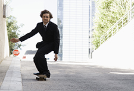
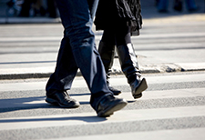

Other Methods

Skateboarding
Skateboarding and roller blading are both equally effective ways to help the environment and your body. This is a method that could be used by people who can't afford a nice bike.

Walking/Jogging
Walking and jogging are the most natural forms of transportation. With some music, this could be an enjoyable and relaxing way to improve your health and the air.

Subway
If distance is an issue, you can still help save the environment and get an easy morning workout by jogging to the subway, and doing wall push-ups and chin-ups on your way to work.